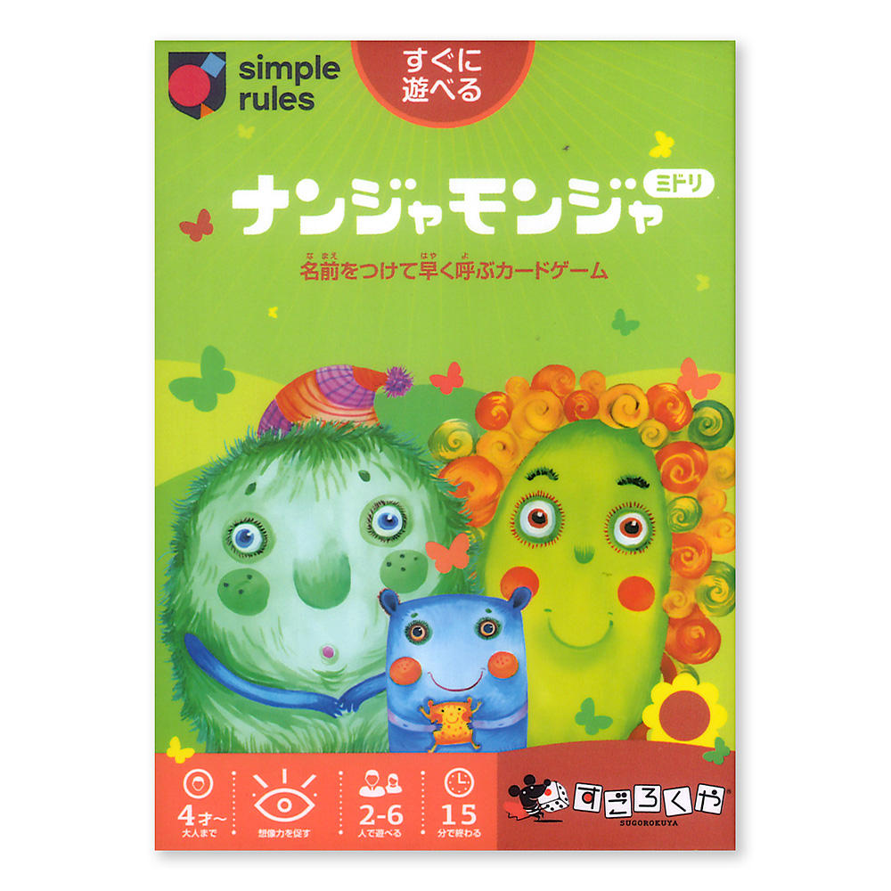
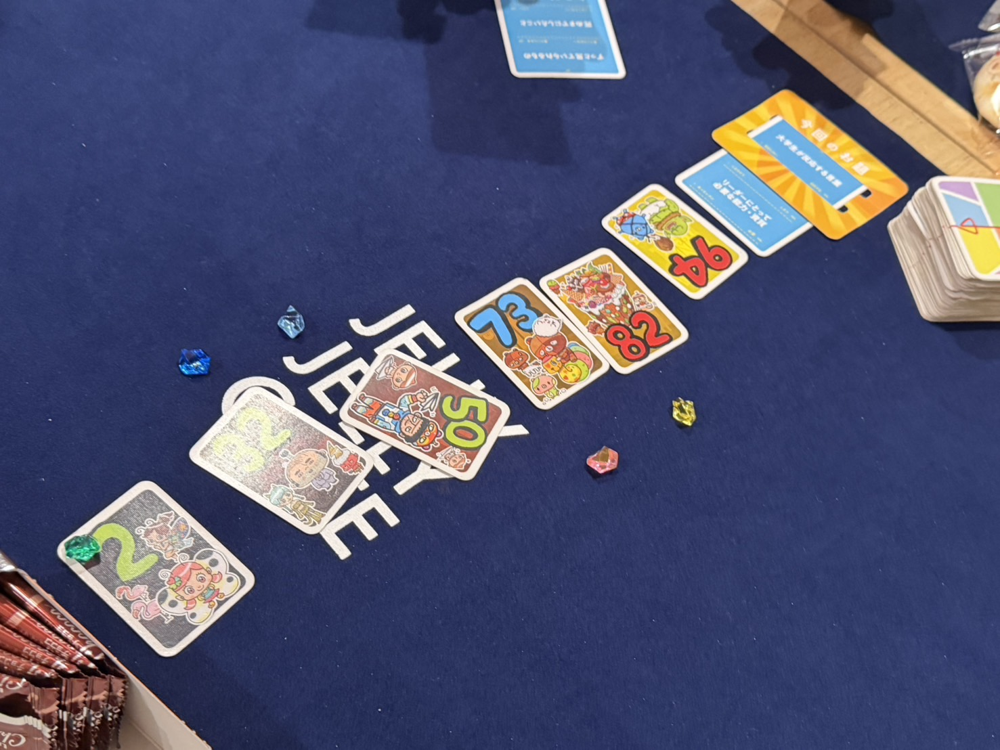
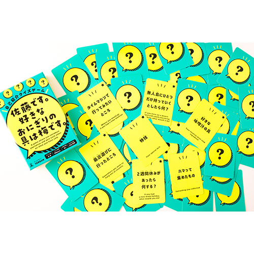
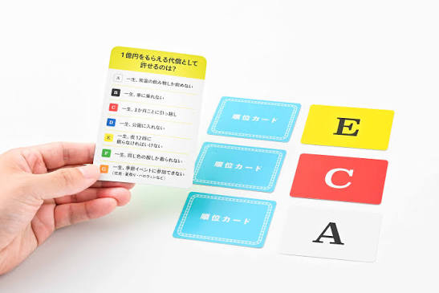
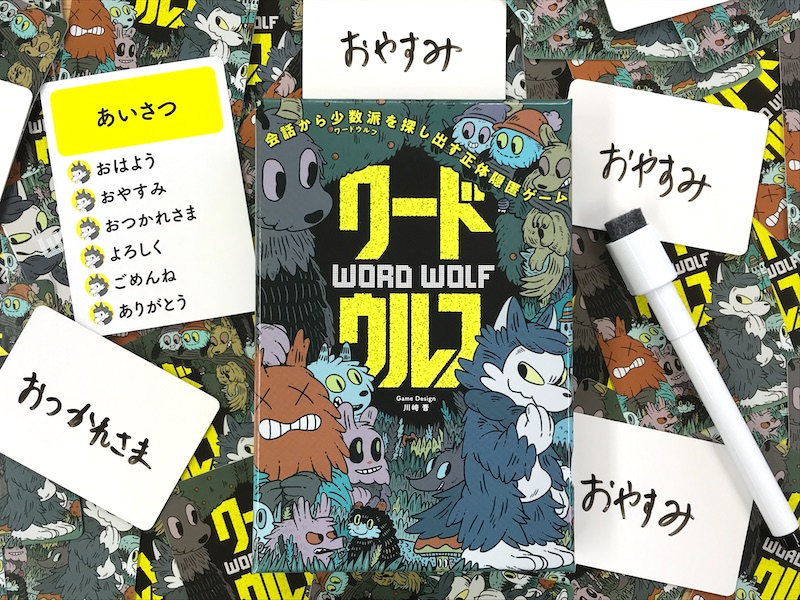
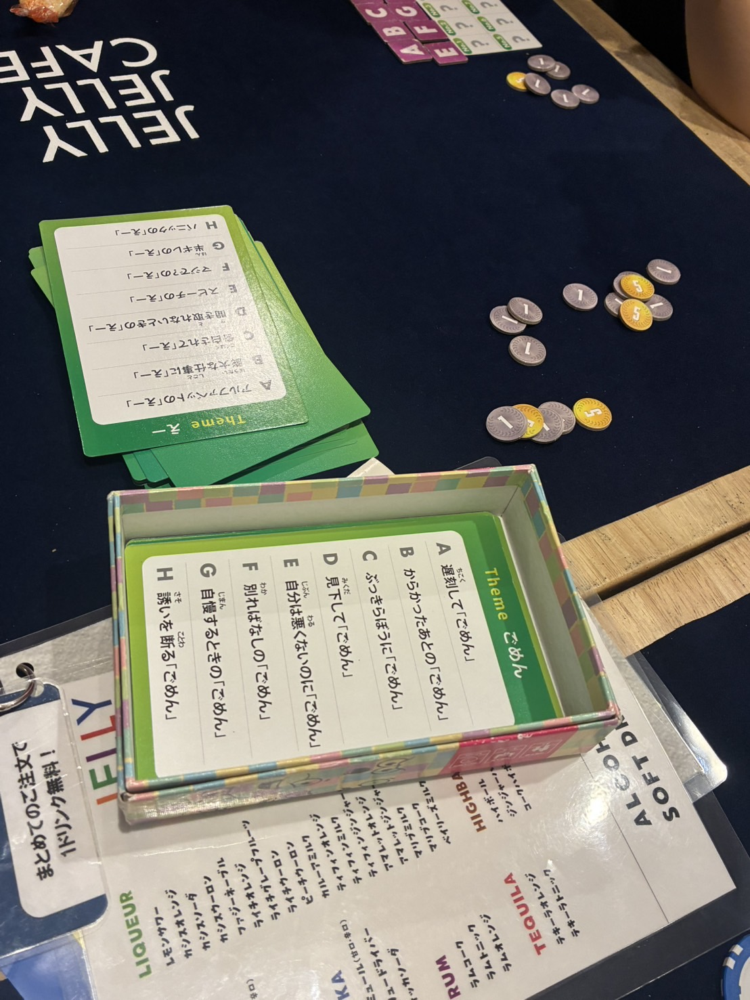
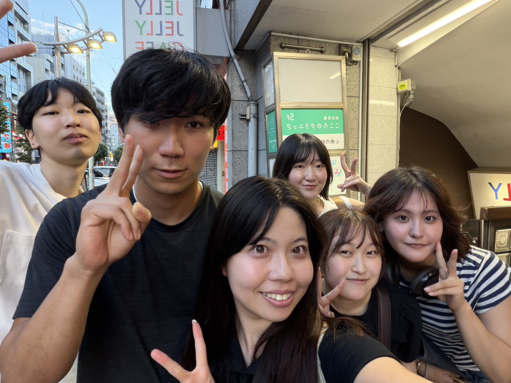

やったこと
・「なんじゃもんじゃ」
カードに描かれたキャラクターに名前をつけ、山札からカードを引いて同じキャラクターが出たときに、その名前を一番早く言った人がカードを獲得するゲーム。
一回目はもちろん楽しいのですが、2、3回目以降になると、前につけたキャラクターの名前と混ざってしまい、「あれ、この子なんて名前だっけ？」となるのがまた面白いゲームです。

・「ito rainbow」
それぞれの人に1〜100の数字が振り分けられ、それを直接言わず、テーマに合わせて言葉で表現し、みんなで数字の小さい順に並べるゲーム。
テーマによってはそれぞれの人の価値観が現れたりするので、かなりテーマ決めに左右されるゲームかもしれません。

・インタビュー
インタビューの時間を店員さんに取っていただき、20分ほど事前に考えてきた質問をもとにたくさん質問させていただきました。
詳しいインタビュー内容はこちら
・「佐藤です。好きなおにぎりの具は梅です。」
お題に合わせて自分の好きなものを言いながら、参加者の名前と好きなものを覚えていくゲーム。
初対面同士にはぴったりのゲーム。自己紹介をただするよりも、ゲーム形式になることで絶対覚えなきゃ、となるので、新歓などにはピッタリだと思います。

・「サンレンタン」
出題者のお題に対する1位〜3位のトップ3を他のプレイヤーが予想して当てる、価値観共有ゲームです。
初対面同士の人がするのももちろん面白いですが、ある程度仲が深まった人たち同士で遊ぶほうが、どれだけ相手をわかっているかを試せるので、より面白いゲームになると思います。

・「ワードウルフ」
参加者の中で一人だけ異なるお題を与えられ、会話をしながら誰が違うお題なのかを探すゲームです。
お題が簡単すぎるとウルフにすぐバレてしまい、うまく市民の中に紛れられてしまうので、どんな会話をするのがミソです。

・「ベストアクト」
お題に合わせた演技を声や表情などで表現し、どのお題を表現しているかを当てるゲーム。
このゲームは思い切って演技をするのがポイントですが、初対面同士だと恥ずかしがってしまうこともあるのでそこまでおすすめではありません。

個人的おすすめのゲーム
①なんじゃもんじゃ
初対面なら一番おすすめ。名前を覚えるだけで、記憶力は試されるものの、単純だから面白い。
一番何回もやったのも、これが単純で分かりやすいからかもしれない。
②ito
これもうちのグループでは人気。テーマ決めによってかなり難易度は変わるけど、色々なお題でできるから面白い。考えることは多いけど、記憶力は使わなくていいから単純で楽しみやすいかも。
感想
一日前まで話したことは全くなかったメンバーでしたが、５時間もボードゲームで遊んだことでかなり仲良くなれたと思います！
ボードゲームの種類によって様々なコミュニケーションの仕方があり、それぞれのゲームで、違う方法でメンバーの価値観を知ったりしていく過程がとても面白かったです。
